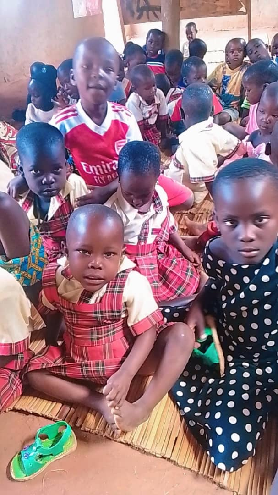

Education support
Scholarships, mentorship, career guidance and school-material support for disadvantaged learners, with emphasis on girls and persons with disabilities.
Our work
Goodwill’s programme areas connect learning, wellbeing, practical skills and household resilience.
Learner support
Scholarships, mentorship, career guidance and school-material support for disadvantaged learners, with emphasis on girls and persons with disabilities.
Planned training in construction, information technology, agriculture, tailoring and entrepreneurship, delivered through suitable trainers and partners.
↗The Buvuma Island Schools Health and HIV Support Initiative brings together health awareness, respectful HIV education and referral-oriented support.
↗The organisation’s mandate includes educational facilities, health centres, community learning hubs, water and sanitation systems.
How education support works
Goodwill does not hand education financing to parents.
The organisation pays participating schools directly and receives school receipts. Families then make monthly repayments into the revolving fund, helping the same resources continue supporting education.
The goal is straightforward: keep boys and girls learning and work towards zero tolerance for avoidable absenteeism.
Schools reached
Programmes are first practised through Goodwill Nursery and Primary School in Buwooya Sub-county before being extended to other school communities.
Goodwill has also begun supporting learners at secondary level and hopes to expand to more districts in Uganda.

Education first
Goodwill Nursery and Primary School provides a practical connection to learners and families in Buwooya. The Initiative can use that local foundation to coordinate wider education and community support.
Support the work